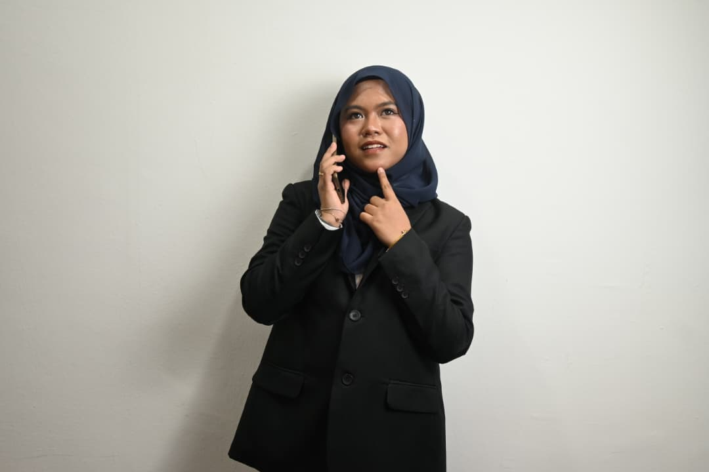
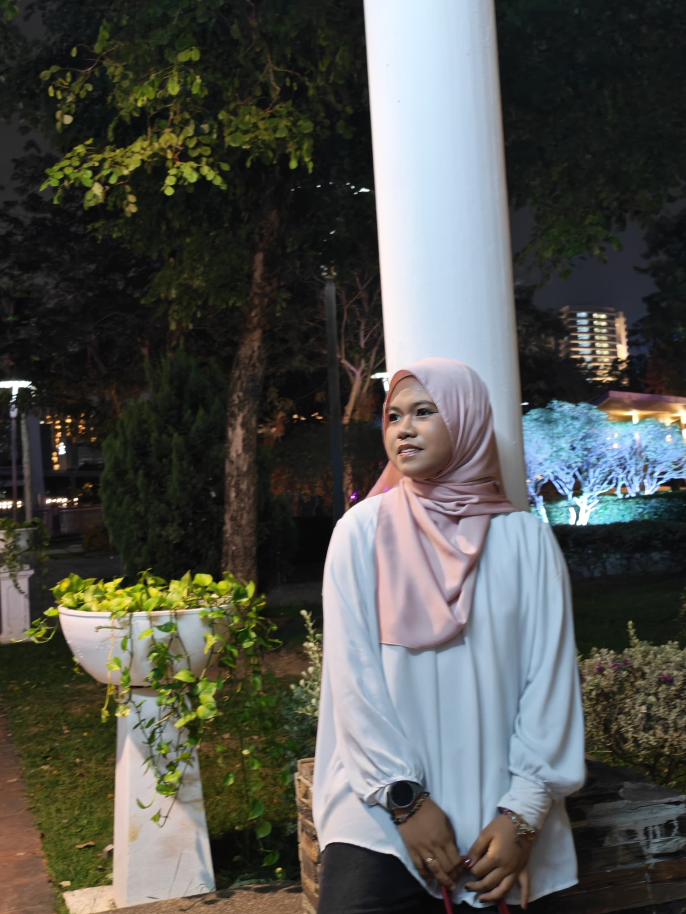

Professional experience
Sales Assistant · T3 Pimple Solutions
Role summary
- Represented T3 Pimple Solutions at a campus-focused Watsons roadshow at MAHSA University.
- Promoted skincare products, explained benefits and answered customer questions.
- Recommended products based on individual customer concerns and preferences.
- Built consultative-selling, rapport-building, product-marketing and consumer-behaviour awareness.
Moments



